React is a JavaScript library for building user interfaces.
React is used to build single-page applications.
React allows us to create reusable UI components.
To use React in production, you need npm which is included with Node.js.
To get an overview of what React is, you can write React code directly in HTML.
But in order to use React in production, you need npm and Node.js installed.
< html>
< head>
< script src="https://unpkg.com/react@17/umd/react.development.js" crossorigin>
< script src="https://unpkg.com/react-dom@17/umd/react-dom.development.js" crossorigin>
< script src="https://unpkg.com/@babel/standalone/babel.min.js">
< /head>
< body>
This way of using React can be OK for testing purposes, but for production you will need to set up a React environment.
If you have npx and Node.js installed, you can create a React application by using create-react-app.
If you've previously installed create-react-app globally, it is recommended that you uninstall the package to ensure npx always uses the latest version of create-react-app.
To uninstall, run this command: npm uninstall -g create-react-app.
Run this command to create a React application named my-react-app:
npx create-react-app my-react-appThe create-react-app will set up everything you need to run a React application.
Now you are ready to run your first real React application!
Run this command to move to the my-react-app directory:
cd my-react-app
Run this command to run the React application my-react-app:
npm start
A new browser window will pop up with your newly created React App! If not, open your browser and type localhost:3000 in the address bar.
The result:

So far so good, but how do I change the content?
Look in the my-react-app directory, and you will find a src folder. Inside the src folder there is a file called App.js, open it and it will look like this:
What's Next?
Now you have a React Environment on your computer, and you are ready to learn more about React.
In the rest of this tutorial we will use our "Show React" tool to explain the various aspects of React, and how they are displayed in the browser.
If you want to follow the same steps on your computer, start by stripping down the src folder to only contain one file: index.js. You should also remove any unnecessary lines of code inside the index.js file to make them look like the example in the "Show React" tool below:
ES6 stands for ECMAScript 6.
ECMAScript was created to standardize JavaScript, and ES6 is the 6th version of ECMAScript, it was published in 2015, and is also known as ECMAScript 2015.
Why Should I Learn ES6?
React uses ES6, and you should be familiar with some of the new features like:
Classes
Arrow Functions
Variables (let, const, var)
Array Methods like .map()
Destructuring
Modules
Ternary Operator
Spread Operator
Class Inheritance
What About this?
The handling of this is also different in arrow functions compared to regular functions.
In short, with arrow functions there are no binding of this.
In regular functions the this keyword represented the object that called the function, which could be the window, the document, a button or whatever.
With arrow functions, the this keyword always represents the object that defined the arrow function.
Let us take a look at two examples to understand the difference.
Both examples call a method twice, first when the page loads, and once again when the user clicks a button.
The first example uses a regular function, and the second example uses an arrow function.
The result shows that the first example returns two different objects (window and button), and the second example returns the Header object twice.
Before ES6 there were only one way of defining your variables: with the var keyword. If you did not define them, they would be assigned to the global object. Unless you were in strict mode, then you would get an error if your variables were undefined.
Now, with ES6, there are three ways of defining your variables: var, let, and const.
If you use var outside of a function, it belongs to the global scope.
If you use var inside of a function, it belongs to that function.
If you use var inside of a block, i.e. a for loop, the variable is still available outside of that block.
var has a function scope, not a block scope.
let is the block scoped version of var, and is limited to the block (or expression) where it is defined.
If you use let inside of a block, i.e. a for loop, the variable is only available inside of that loop.
let has a block scope.
const is a variable that once it has been created, its value can never change.
const has a block scope.
There are many JavaScript array methods.
One of the most useful in React is the .map() array method.
The .map() method allows you to run a function on each item in the array, returning a new array as the result.
In React, map() can be used to generate lists.
To illustrate destructuring, we'll make a sandwich. Do you take everything out of the refrigerator to make your sandwich? No, you only take out the items you would like to use on your sandwich.
Destructuring is exactly the same. We may have an array or object that we are working with, but we only need some of the items contained in these.
Destructuring makes it easy to extract only what is needed.
Here is the new way of assigning array items to a variable:
With destructuring:
const vehicles = ['mustang', 'f-150', 'expedition']; const [car, truck, suv] = vehicles;
When destructuring arrays, the order that variables are declared is important.
If we only want the car and suv we can simply leave out the truck but keep the comma:
const vehicles = ['mustang', 'f-150', 'expedition']; const [car,, suv] = vehicles;
Destructuring comes in handy when a function returns an array:
With destructuring:
function myVehicle({type, color, brand, model}) {
const message = 'My ' + type + ' is a ' + color + ' ' + brand + ' ' + model + '.';
}
Notice that the object properties do not have to be declared in a specific order.
We can even destructure deeply nested objects by referencing the nested object then using a colon and curly braces to again destructure the items needed from the nested object:
The JavaScript spread operator (...) allows us to quickly copy all or part of an existing array or object into another array or object.
The spread operator is often used in combination with destructuring.
We can use the spread operator with objects too:
Press F12 and see the result object in the console view.
Notice the properties that did not match were combined, but the property that did match, color, was overwritten by the last object that was passed, updateMyVehicle. The resulting color is now yellow.
JavaScript modules allow you to break up your code into separate files.
This makes it easier to maintain the code-base.
ES Modules rely on the import and export statements.
Export
You can export a function or variable from any file.
Let us create a file named person.js, and fill it with the things we want to export.
There are two types of exports: Named and Default.
Named Exports
You can create named exports two ways. In-line individually, or all at once at the bottom.
export const name = "Jesse" export const age = "40"
const name = "Jesse"
const age = "40"
export { name, age }
React's goal is in many ways to render HTML in a web page.
React renders HTML to the web page by using a function called ReactDOM.render().
The ReactDOM.render() function takes two arguments, HTML code and an HTML element.
The purpose of the function is to display the specified HTML code inside the specified HTML element.
But render where?
There is another folder in the root directory of your React project, named "public". In this folder, there is an index.html file.
You'll notice a single < div> in the body of this file. This is where our React application will be rendered.
The HTML Code
The HTML code in this tutorial uses JSX which allows you to write HTML tags inside the JavaScript code:
The Root Node
The root node is the HTML element where you want to display the result.
It is like a container for content managed by React.
It does NOT have to be a < div> element and it does NOT have to have the id='root':
What is JSX?
JSX stands for JavaScript XML.
JSX allows us to write HTML in React.
JSX makes it easier to write and add HTML in React.
Coding JSX
JSX allows us to write HTML elements in JavaScript and place them in the DOM without any createElement() and/or appendChild() methods.
JSX converts HTML tags into react elements.
You are not required to use JSX, but JSX makes it easier to write React applications.
Here are two examples. The first uses JSX and the second does not:
Example 1
JSX:
Example 2
Without JSX:
With JSX you can write expressions inside curly braces { }.
The expression can be a React variable, or property, or any other valid JavaScript expression. JSX will execute the expression and return the result:
Inserting a Large Block of HTML
To write HTML on multiple lines, put the HTML inside parentheses:
Create a list with three list items:
One Top Level Element
The HTML code must be wrapped in ONE top level element.
So if you like to write two paragraphs, you must put them inside a parent element, like a div element.
Wrap two paragraphs inside one DIV element:
JSX will throw an error if the HTML is not correct, or if the HTML misses a parent element.
Alternatively, you can use a "fragment" to wrap multiple lines. This will prevent unnecessarily adding extra nodes to the DOM.
A fragment looks like an empty HTML tag: <>.
Wrap two paragraphs inside a fragment:
Elements Must be Closed
JSX follows XML rules, and therefore HTML elements must be properly closed.
Close empty elements with />
JSX will throw an error if the HTML is not properly closed.
Attribute class = className
The class attribute is a much used attribute in HTML, but since JSX is rendered as JavaScript, and the class keyword is a reserved word in JavaScript, you are not allowed to use it in JSX.
Use attribute className instead.
JSX solved this by using className instead. When JSX is rendered, it translates className attributes into class attributes.
Conditions - if statements
React supports if statements, but not inside JSX.
To be able to use conditional statements in JSX, you should put the if statements outside of the JSX, or you could use a ternary expression instead:
Option 1:
Write if statements outside of the JSX code:
Write "Hello" if x is less than 10, otherwise "Goodbye":
Go To Index.js and Execute in React AppOption 2:
Use ternary expressions instead:
Write "Hello" if x is less than 10, otherwise "Goodbye":
Note that in order to embed a JavaScript expression inside JSX, the JavaScript must be wrapped with curly braces, {}.
Components are like functions that return HTML elements.
React Components
Components are independent and reusable bits of code. They serve the same purpose as JavaScript functions, but work in isolation and return HTML.
Components come in two types, Class components and Function components, in this tutorial we will concentrate on Function components.
In older React code bases, you may find Class components primarily used. It is now suggested to use Function components along with Hooks, which were added in React 16.8. There is an optional section on Class components for your reference.
Create Your First Component
When creating a React component, the component's name MUST start with an upper case letter.
Class Component
A class component must include the extends React.Component statement. This statement creates an inheritance to React.Component, and gives your component access to React.Component's functions.
The component also requires a render() method, this method returns HTML.
Function Component
Here is the same example as above, but created using a Function component instead.
A Function component also returns HTML, and behaves much the same way as a Class component, but Function components can be written using much less code, are easier to understand, and will be preferred in this tutorial.
Rendering a Component
Now your React application has a component called Car, which returns an < h2> element.
To use this component in your application, use similar syntax as normal HTML: < Car />
Props
Components can be passed as props, which stands for properties.
Props are like function arguments, and you send them into the component as attributes.
You will learn more about props in the next chapter.
Use an attribute to pass a color to the Car component, and use it in the render() function:
Go To Index.js and Execute in React AppComponents in Components
We can refer to components inside other components:
Use the Car component inside the Garage component:
Go To Index.js and Execute in React AppComponents in Files
React is all about re-using code, and it is recommended to split your components into separate files.
To do that, create a new file with a .js file extension and put the code inside it:
Note that the filename must start with an uppercase character.
This is the new file, we named it "Car.js":
To be able to use the Car component, you have to import the file in your application.
Now we import the "Car.js" file in the application, and we can use the Car component as if it was created here.
Props are arguments passed into React components.
Props are passed to components via HTML attributes.
props stands for properties.
React Props
React Props are like function arguments in JavaScript and attributes in HTML.
To send props into a component, use the same syntax as HTML attributes:
Add a "brand" attribute to the Car element:
The component receives the argument as a props object:
Use the brand attribute in the component:
Pass Data
Props are also how you pass data from one component to another, as parameters.
Send the "brand" property from the Garage component to the Car component:
Go To Index.js and Execute in React AppIf you have a variable to send, and not a string as in the example above, you just put the variable name inside curly brackets:
Create a variable named carName and send it to the Car component:
Or if it was an object:
Create an object named carInfo and send it to the Car component:
Note: React Props are read-only! You will get an error if you try to change their value.
Just like HTML DOM events, React can perform actions based on user events.
React has the same events as HTML: click, change, mouseover etc.
Adding Events
React events are written in camelCase syntax:
onClick instead of onclick.
React event handlers are written inside curly braces:
onClick={shoot} instead of onClick="shoot()".
Passing Arguments
To pass an argument to an event handler, use an arrow function.
Send "Goal!" as a parameter to the shoot function, using arrow function:
Go To Index.js and Execute in React AppReact Event Object
Event handlers have access to the React event that triggered the function.
In our example the event is the "click" event.
Arrow Function: Sending the event object manually:
Go To Index.js and Execute in React AppIn React, you can conditionally render components.
There are several ways to do this.
if Statement
We can use the if JavaScript operator to decide which component to render.
Try changing the isGoal attribute to true:
Now, we'll create another component that chooses which component to render based on a condition:
Try changing the isGoal attribute to False:
Another way to conditionally render a React component is by using the && operator.
We can embed JavaScript expressions in JSX by using curly braces:
Go To Index.js and Execute in React AppAnother way to conditionally render elements is by using a ternary operator.
condition ? true : false
Return the MadeGoal component if isGoal is true, otherwise return the MissedGoal component:
In React, you will render lists with some type of loop.
The JavaScript map() array method is generally the preferred method.
If you need a refresher on the map() method, check out the ES6 section.
Let's render all of the cars from our garage:
Go To Index.js and Execute in React AppWhen you run this code in your create-react-app, it will work but you will receive a warning that there is no "key" provided for the list items.
Keys allow React to keep track of elements. This way, if an item is updated or removed, only that item will be re-rendered instead of the entire list.
Keys need to be unique to each sibling. But they can be duplicated globally.
Generally, the key should be a unique ID assigned to each item. As a last resort, you can use the array index as a key.
Let's refactor our previous example to include keys:
Go To Index.js and Execute in React AppJust like in HTML, React uses forms to allow users to interact with the web page.
Adding Forms in React
You add a form with React like any other element:
This will work as normal, the form will submit and the page will refresh.
But this is generally not what we want to happen in React.
We want to prevent this default behavior and let React control the form.
Handling forms is about how you handle the data when it changes value or gets submitted.
In HTML, form data is usually handled by the DOM.
In React, form data is usually handled by the components.
When the data is handled by the components, all the data is stored in the component state.
You can control changes by adding event handlers in the onChange attribute.
We can use the useState Hook to keep track of each inputs value and provide a "single source of truth" for the entire application.
See the React Hooks section for more information on Hooks.
Use the onChange Hook to manage the input:
You can control the submit action by adding an event handler in the onSubmit attribute for the < form>:
Add a submit button and an event handler in the onSubmit attribute:
Go To Index.js and Execute in React AppMultiple Input Fields
You can control the values of more than one input field by adding a name attribute to each element.
We will initialize our state with an empty object.
To access the fields in the event handler use the event.target.name and event.target.value syntax.
To update the state, use square brackets [bracket notation] around the property name.
Write a form with two input fields:
Go To Index.js and Execute in React AppNote: We use the same event handler function for both input fields, we could write one event handler for each, but this gives us much cleaner code and is the preferred way in React.
The textarea element in React is slightly different from ordinary HTML.
In HTML the value of a textarea was the text between the start tag < textarea> and the end tag < /textarea>.
In React the value of a textarea is placed in a value attribute. We'll use the useState Hook to mange the value of the textarea:
A simple textarea with some content:
Go To Index.js and Execute in React AppSelect
A drop down list, or a select box, in React is also a bit different from HTML.
in HTML, the selected value in the drop down list was defined with the selected attribute.
In React, the selected value is defined with a value attribute on the select tag:
A simple select box, where the selected value "Volvo" is initialized in the constructor:
Go To Index.js and Execute in React AppBy making these slight changes to < textarea> and < select>, React is able to handle all input elements in the same way.
To create an application with multiple page routes, let's first start with the file structure.
Within the src folder, we'll create a folder named pages with several files:
src\pages\:
Home.js
Blogs.js
Contact.js
Each file will contain a very basic React component:
Example Explained
We wrap our content first with < Router>.
< Link> is used to set the URL and keep track of browsing history.
Anytime we link to an internal path, we will use < Link> instead of < a href="">.
< Switch> is similar to a JavaScript switch statement. It will conditionally render the < Route> that matches the < Link> path.
ES is an abbreviation used for ECMA Script. It is a standard for different scripting languages such as JS (JavaScript) made by ECMA.
ECMA is an abbreviation used for European Computer Manufacturers Association. It is a standard organization based out of Switzerland which takes care of ES. ES11 (2020) is updated in June 2020 and its nomenclature is like that the year in which the update is released then the name will be a year plus one such as ES10 (2019).
In ECMA Script6 also called ES6 and ECMAScript 2015 various new features were added:
The features are listed below:
The let keyword
The const keyword
Arrow functions
Classes
Modules
The Rest Parameters
The Spread Operator
Destructuring Assignment
The Object Destructuring Assignment
Default values for Function Parameters
Template Literals
The for…of Loop
It is a term which you will listen to many times but will find it difficult to understand. I will tell you only the overview of this because manually you will not indulge in Babel but automatically things will take place by Babel.
Babel is a free and open-source JavaScript Transcompiler that is mainly used to convert ES6 (2015) and above code into a backward compatible code that can be run by older JS engines. Babel deploys a technique called Polyfill which basically means to fill many areas.
 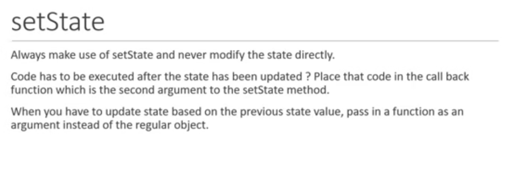
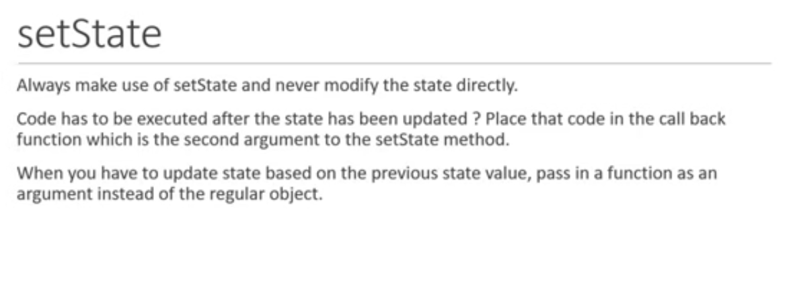


 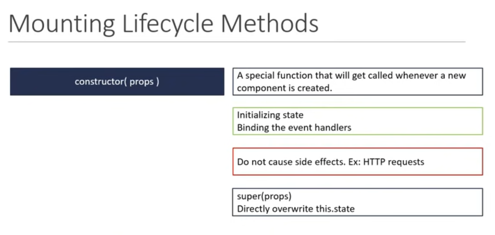
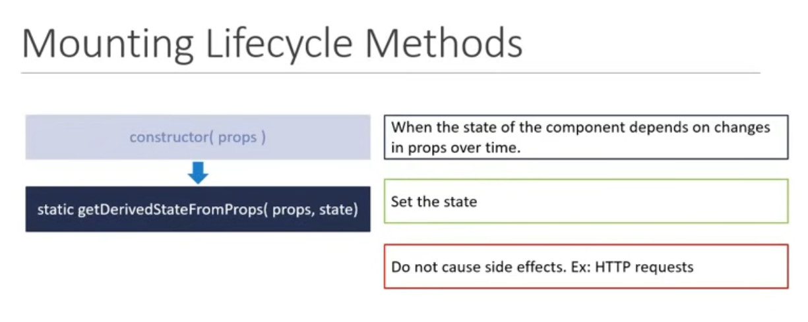
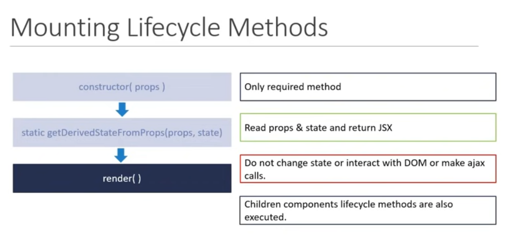
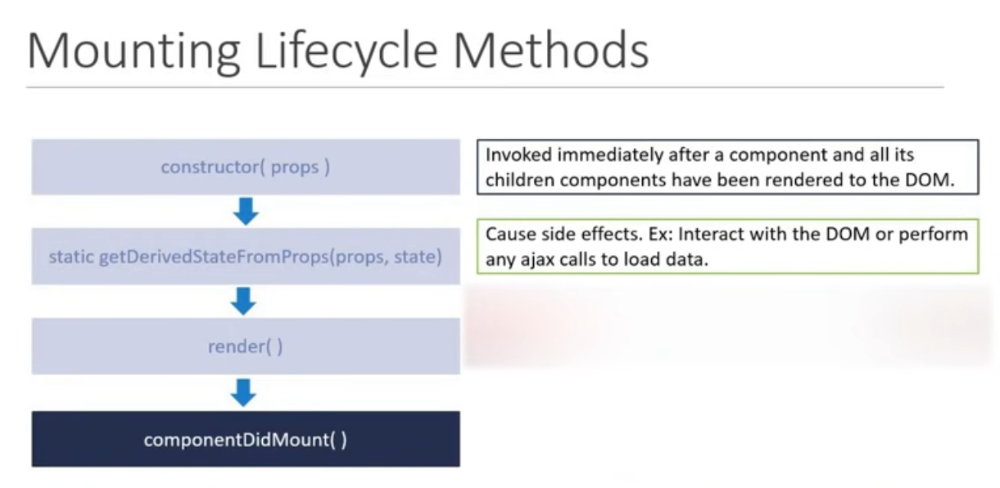
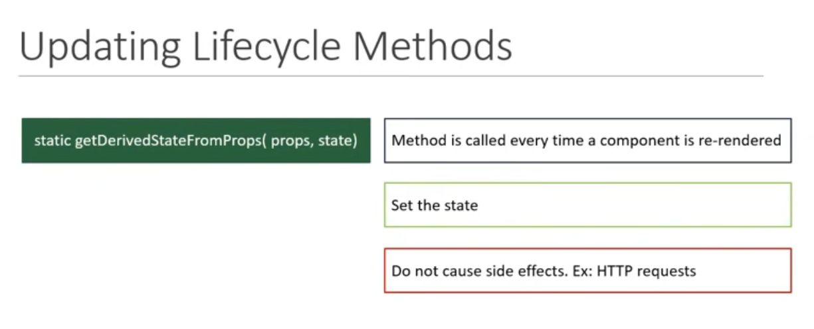
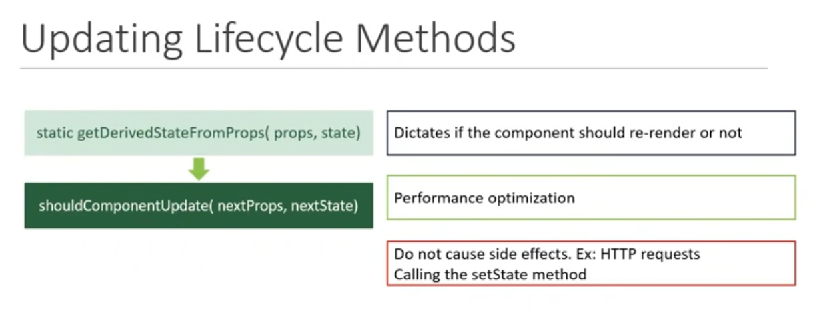
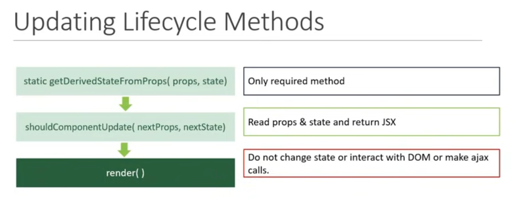
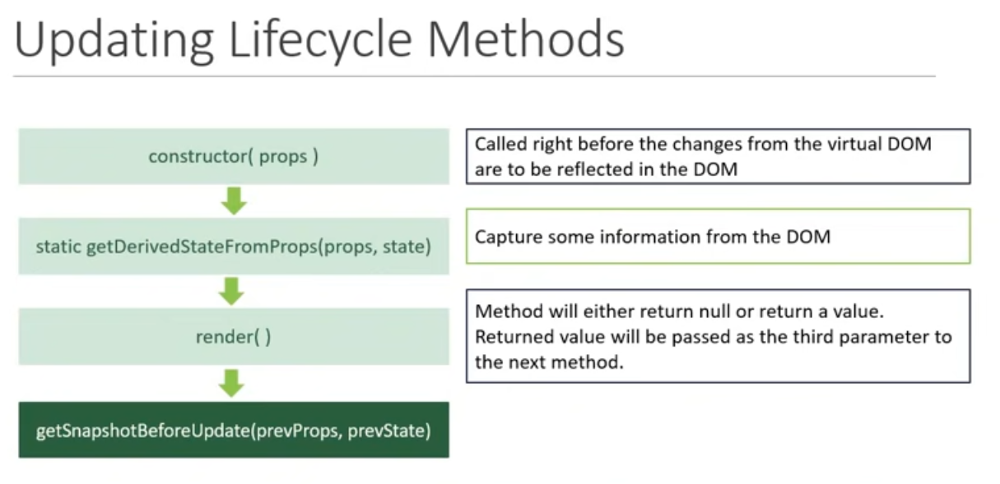
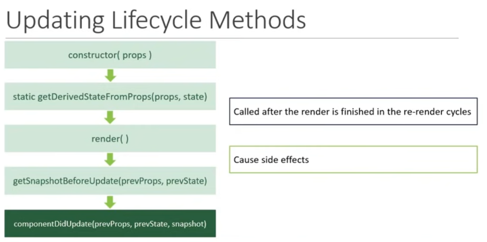
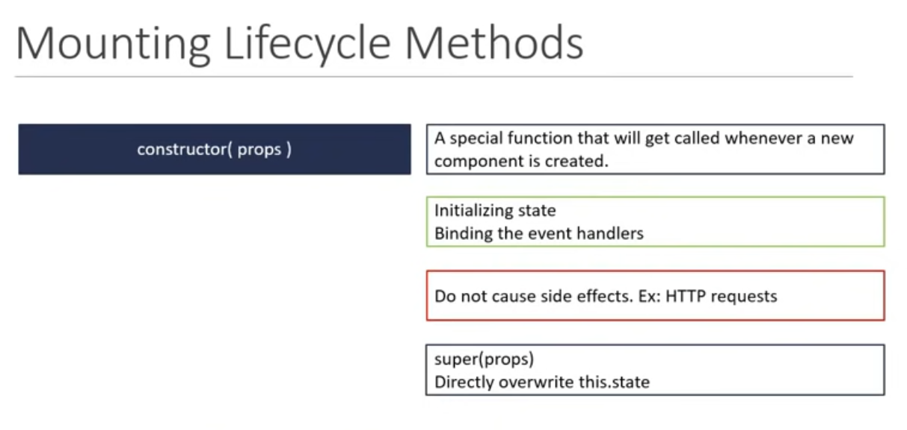
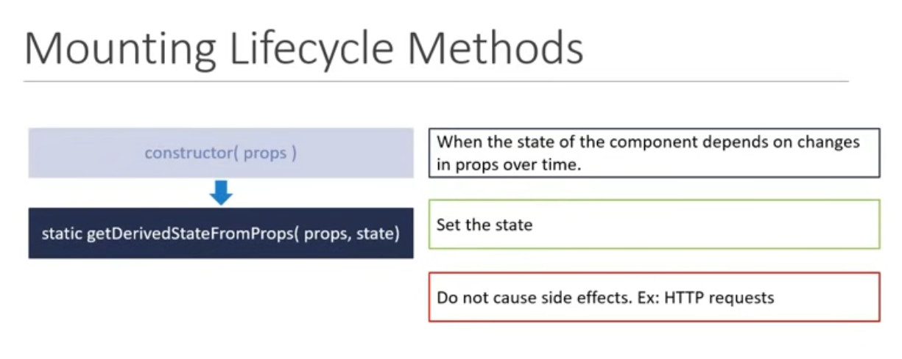
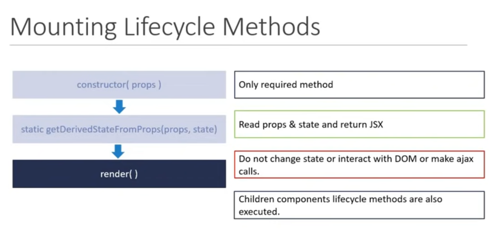
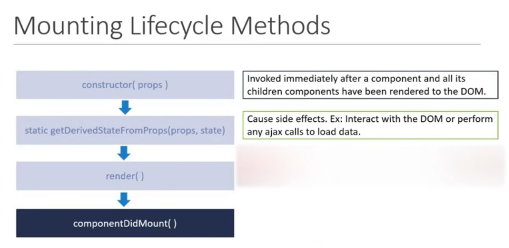
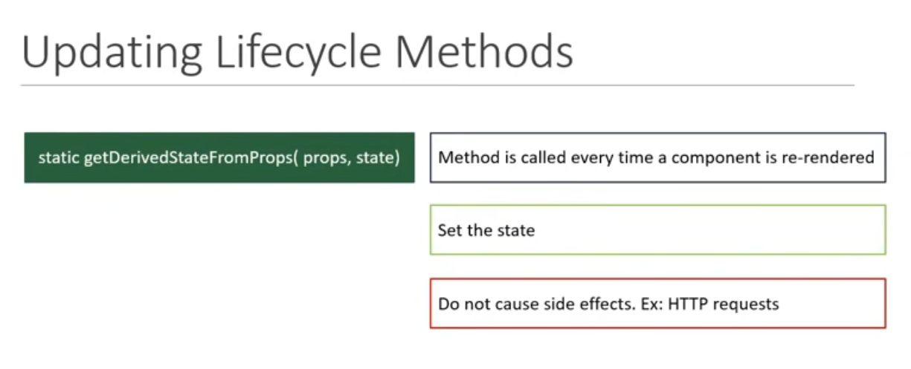
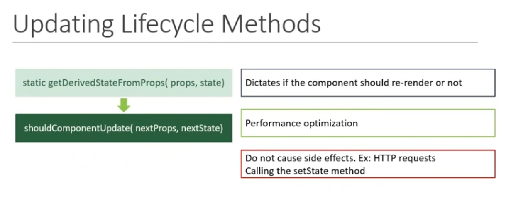
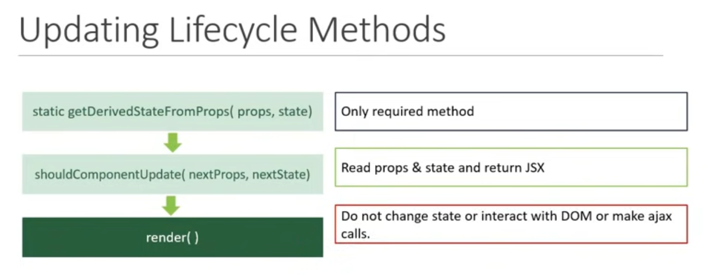
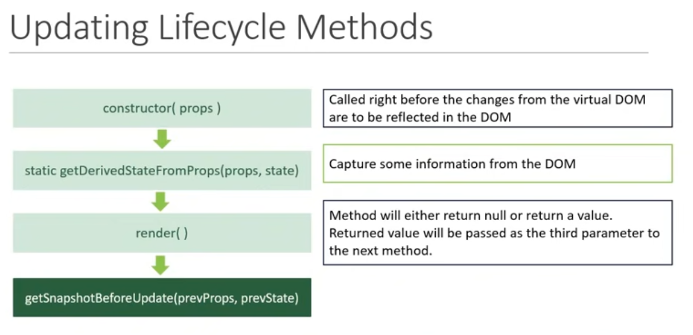
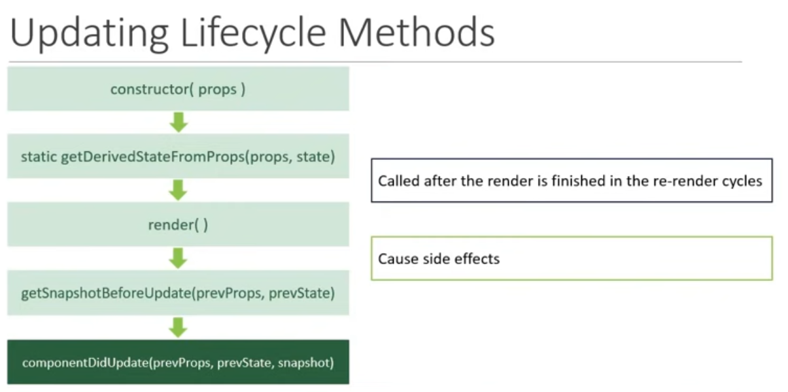
React Fragment can accept keys for an array,
but Empty Fragment can't accept keys for an array